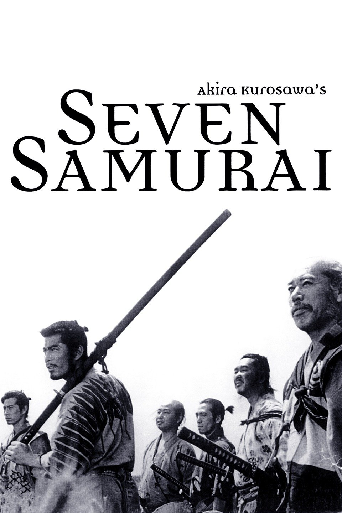

I just graduated from high school and came in here hoping to learn applicable knowledge to further my goal of becoming a programmer.
|  |
Seven Samurai A samurai answers a village's request for protection after he falls on hard times. The town needs protection from bandits, so the samurai gathers six others to help him teach the people how to defend themselves, and the villagers provide the soldiers with food. A giant battle occurs when 40 bandits attack the village. |
|
Ivan's Childhood When Nazi invaders destroy his Russian village and kill his family, 12-year-old Ivan (Kolya Burlyayev) is placed in a German prison camp. Ivan escapes from the camp and crosses back over to Russia, and comes under the care of Capt. Kholin (Valentin Zubkov), who wants to send Ivan to military school. Ivan refuses, requesting that he be allowed to use his powers of stealth to return to Germany to spy on the Nazis and avenge the killing of his family. |
|
|
Come and See The invasion of a village in Byelorussia by German forces sends young Florya (Aleksey Kravchenko) into the forest to join the weary Resistance fighters, against his family's wishes. There he meets a girl, Glasha (Olga Mironova), who accompanies him back to his village. On returning home, Florya finds his family and fellow peasants massacred. His continued survival amidst the brutal debris of war becomes increasingly nightmarish, a battle between despair and hope. |